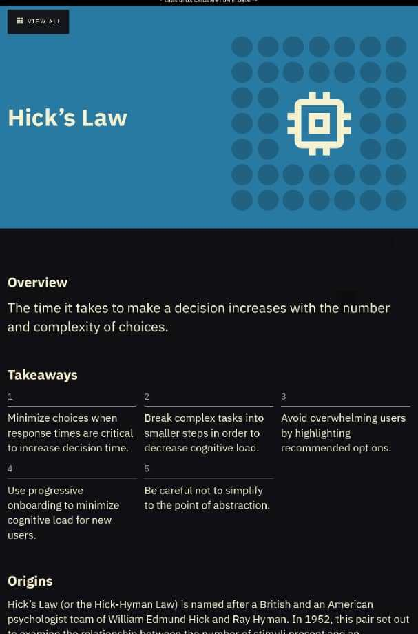
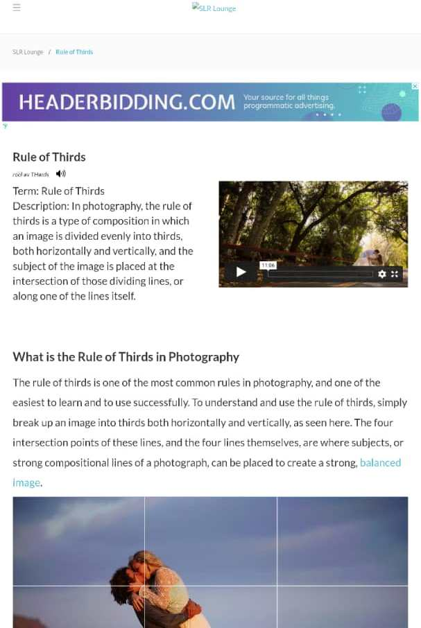

Visual Hierarchy
Why i chooses this site is because of the presentation in the site. It have all or almost all the design principles. And for this reason, it's one of the best principle to learn from
Hick's Law
Colorlib Why i choose Colorlib website is because it uses one of the many option of the design principles, for example; how it content is layout and the font style type and even colors option is in the right way.
Rule of Thirds
Why I choose Tripewire Magazine website is because it suite the design principles and how the content of the website is being layout.